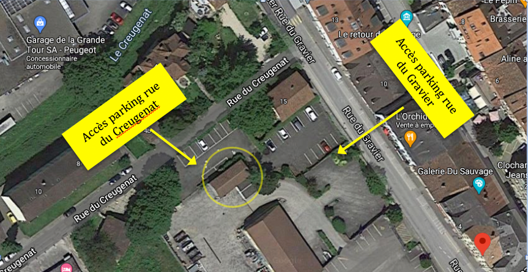
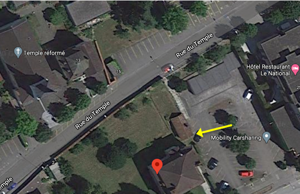
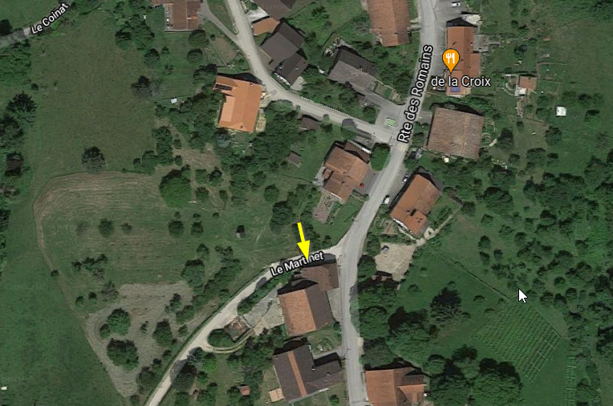
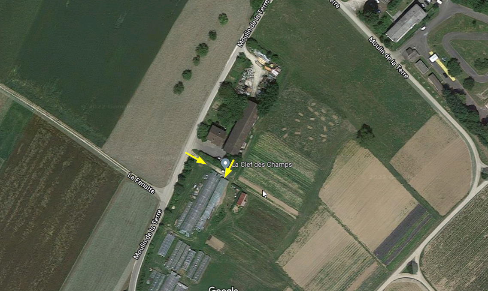
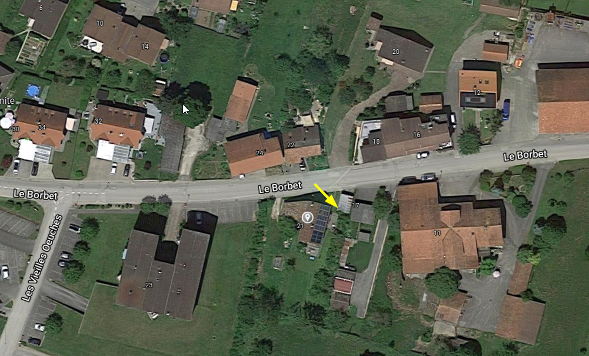
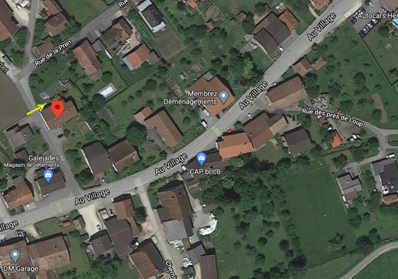

Porrentruy

Le dépôt se trouve dans un garage à la Rue du Gravier 9. La clé du garage se trouve dans une boite à code sur la gauche de la porte.
Livraison: jeudi 17h (17h30 en hiver)
Horaires d'accès:
- Jeudi dès 17h
- Vendredi toute la journée
- Samedi toute la journée
- Dimanche toute la journée
Delémont

Le dépôt se trouve dans le local de jardin de « À PART ENTIÈRE », Villa Müller, Route de Bâle 17. On y accède par la place de parc qui se trouve juste à côté. La clé du dépôt se trouve dans une boite à code sur la porte.
Livraison: jeudi 17h (18h15 en hiver)
Horaires d'accès:
- Jeudi dès 17h
- Vendredi dès 16h
- Samedi toute la journée
- Dimanche toute la journée
Courtemautruy

Le dépôt se trouve dans le magasin de la Ferme des Romains Route des Romains 24. On y accède du côté du chemin du Martinet. Les pains commandés sont entreposés dans le magasin au fond à droite.
Ferme des Romains
Magasin La Roulotte
Livraison: jeudi 15h
Horaires d'accès:
Courgenay jardin

Le dépôt se trouve au jardin de La Clefs des Champs, Chemin Moulin de la Terre. Sous le couvert au début à droite se trouve une petite armoire pour les pains.
La Clefs des Champs
Livraison: jeudi 17h (17h30 en hiver)
Horaires d'accès:
- Jeudi dès 17h
- Vendredi toute la journée
- Samedi toute la journée
- Dimanche toute la journée
Courgenay village

Le dépôt se trouve Rue Le Borbet 21. Vers l'entrée sur la gauche se trouve une petite armoire pour les pains.
Livraison: jeudi 17h (17h30 en hiver)
Horaires d'accès:
- Jeudi dès 17h
- Vendredi toute la journée
- Samedi toute la journée
Glovelier

Le dépôt se trouve Rue du Borbet 2, dans le garage derrière la maison de la famille Berberat.
Livraison: jeudi 17h (18h15 en hiver)
Horaires d'accès:
- Jeudi 17h-20h30
- Vendredi 16h-20h
- Samedi 9h-12h